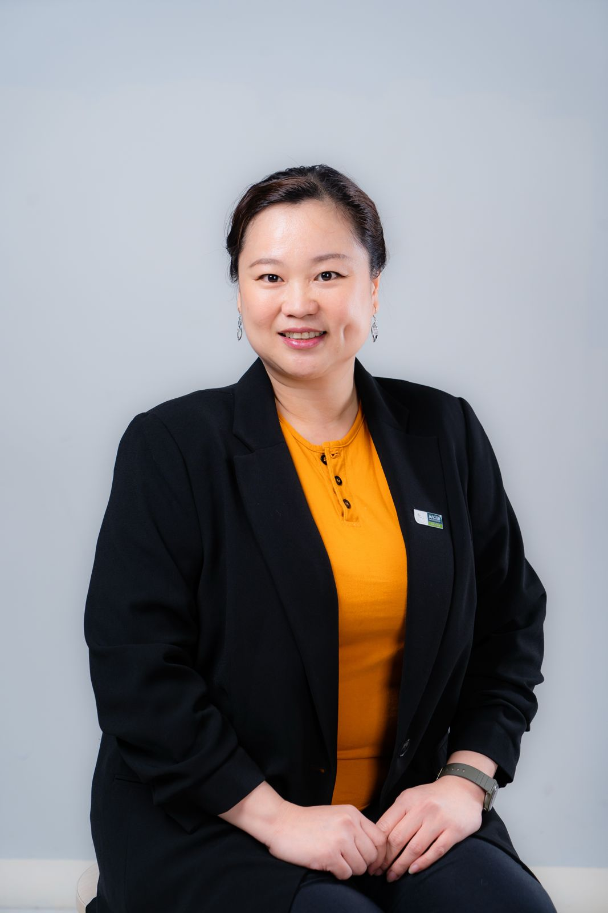

Entrepreneurship
Business creation, innovation, and mentoring for emerging ventures.

Academic Portfolio
Researcher, lecturer, Research Interest Group leader, and business mentor.
Focused on entrepreneurship, sustainable business, MSME development, circular economy, eco-innovation, and business analytics.
Dr. Mulyani Karmagatri is a researcher and lecturer at Bina Nusantara University specializing in entrepreneurship, innovation, and sustainable business development. She leads the Small Medium Enterprises, Entrepreneurship, and Innovation Research Interest Group (RIG SMEEI).
Her research explores MSME development, digital transformation, circular economy innovation, and community empowerment. Her work connects business analytics with practical eco-innovation initiatives for sustainable entrepreneurship.
UMKM & Indonesian Culture
The portfolio theme connects MSME mentoring, circular economy thinking, and Indonesian cultural heritage through a living visual system inspired by market networks, batik geometry, and community collaboration.
A focused map of topics from entrepreneurship to data-informed sustainability.
Business creation, innovation, and mentoring for emerging ventures.
Strategies that align business growth with long-term social and environmental value.
Research and community programs for small and medium enterprise resilience.
Resource-aware systems, zero-waste thinking, and practical circular innovation.
Innovation practices that help organizations reduce waste and improve impact.
Evidence-based decision making for entrepreneurship and sustainability research.
Roles across teaching, research leadership, professional association work, and international conference organization.
Bina Nusantara University
Bina Nusantara University
Indonesian Association of Entrepreneurship Study Programs (APSKI)
International Conference on Eco-Friendly and Zero Waste (ICEZ)
The 1st APSKI International Conference on Entrepreneurship (APSKI-ICE)
Catholic Parahyangan University
Parahyangan University
Institute of Indonesian Arts and Culture
Peer-review contributions across business, education, sustainability, and social sciences.
Contact